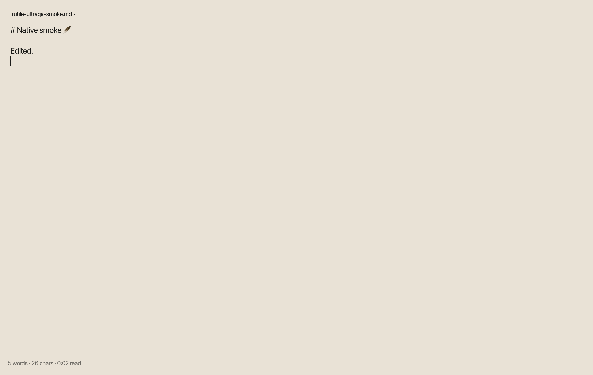

The editor is more stable.
The product is still unfinished.
Session recovered. Three additional recovery defects repaired locally; the full backlog remains open.
Repaired a native editing crash, unsaved tab loss, stale previews, view modes, named-tab restoration and stale word counts. This is an uncommitted macOS development candidate. It has not been installed or released.
Recovery continuation
The previous branch and uncommitted repairs survived. Autosave now preserves damaged journals and their snapshots, startup reports entirely unreadable recovery data, and the preview displays the recovered text.
New regressions failed before repair and passed afterward. The workspace suite passed after the journal fixes; all 254 focused native tests and an 11.2-second native smoke passed after the preview fix. Formatting, both Clippy checks, dependency policy and audit passed.
A damaged journal needs repair before autosave can resume. Per-tab recovery identity, native conflict controls and the missing panels remain unfinished. Preview HTML was checked through the actual scheme host; no new browser, accessibility or TasteCheck pass is claimed.
Previous five-cycle evidence
- 1,155 workspace tests passed; two infrastructure tests explicitly ignored.
- 254 focused native tests passed. These are separate runs, not added to the workspace total.
- Final native smoke passed in 13 seconds, including Unicode edits, save/reopen, view widths, Select All and 50 lifecycle cycles.
- Formatting, workspace and native Clippy, dependency policy and security audit passed.
What still needs work
- Recovery: every unsaved or untitled tab still needs its own crash-recovery journal.
- Native interactions: conflict resolution controls and physical close/save prompts need completion and verification.
- Missing panels: outline, cross-document search/backlinks and revision history are not implemented native interfaces.
- Linux validation, accessibility, packaged installation and independent review remain open.
Observed native output
The source compositor was captured during the actual native smoke and visually inspected. Its edited status now shows five words and 26 characters. These captures do not include WKWebView preview pixels.

View the Split-mode source capture; the native trace verified a 600-pixel source pane in a 1,200-pixel window.

Local candidate
Run ./target/ultraqa/rutile-recovery /absolute/path/to/note.md from the repository. This updated development candidate uses production macOS features and rejects the test-only smoke flag. The earlier candidate remains preserved.
Candidate SHA-256: 8a405edbeb8c18cdf3b0d2d267ad77d3133cc6ebec4079400ccb8e5231849401
The next repair should address per-document recovery, followed by native conflict and close interactions, then the missing panels.